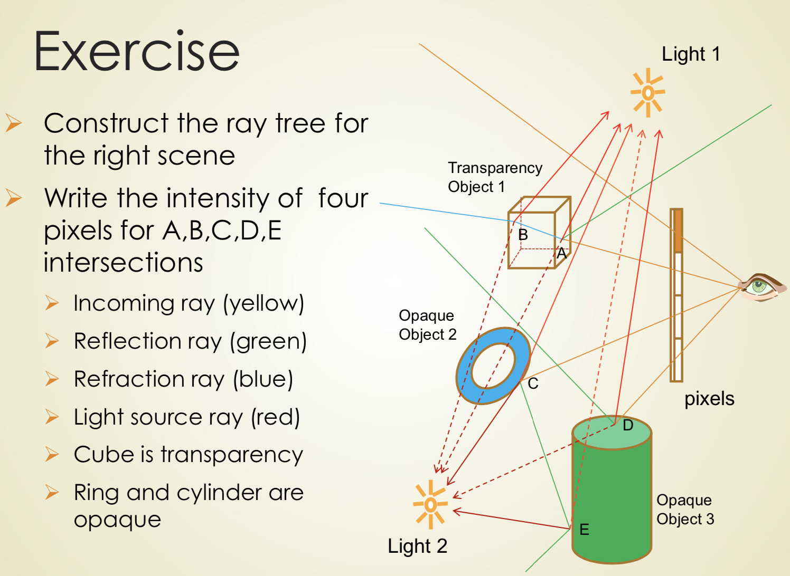

计算机图形学（九）Radiosity & Ray Tracing
Radiosity
1. Radiosity History
- In about 1950, Radiosity methods in the engineering field of heat transfer.
- In 1984, Radiosity rendering in computer graphics by Goral et al. of Cornell University. (Cornell Box)
- Lightscape – Notable commercial radiosity engine
- Radiosity vs. Ray Tracing
- Ray tracing is computed in image-space
- if the camera is moved, we have to start over
- Can transmit the reflection, refraction and shadow
- Radiosity is computed in object-space
- View-independent to allow interactive walkthroughs in the scene
- Can transmit the diffuse interreflection
- Ray tracing is computed in image-space
2. What is Radiosity?
- Concept
- describes an equilibrium energy balance（平衡能量） within an enclosure based on the theory of thermal radiation
- relies on computing the amount of light energy transferred among surfaces
- The surfaces are each divided up into one or more smaller surfaces (patches)
- All scattering on the patches is diffuse interreflections and soft shadows for rendering
- For computing how well the patches can see each other, we have coefficients called form factors
- Radiosity Computing
- The radiosity energy is in the form of visible light
- By computing from the geometric orientation (form factor) of two patches, we solve the radiosity of each patch by radiosity equations
- Solve radiosity equations as a matrix problem and it is a linear system
- Progressive radiosity solves the system iteratively by the several passes
- Features of Radiosity
- For rendering a static scene (no add or modify the objects)
- Can simulate the lighting of the scene with time-lapse
- Can ramble in the scene by moving view with whole direction other than BSP with the z direction
- Processing of Radiosity
3. Radiosity Algorithm
- Radiosity Equation
- Calculating the flux L for each patch as the following rendering equation, which consists of two parts
- $L(x’,w’)=E(x’,w’)+\int_{\rho_x’}(w,w’)L(x,w)G(x,x’)V(x,x’)dA$
- emitted radiance from a point x’: E is non-zero only if x’ is emissive (a light source)
- Sum of the incident energy which is the contribution from all of the other patches in the scene
- diffuse coefficient at the point x ‘ from the direction ω to the direction ω ‘
- gathering the radiance at point x in the direction ω
- visibility between $x$ and $x’$: $G(x,x’)=\frac{\cos\theta\cos\theta’}{\pi\cdot||x-x’||^2}dA$
4. Calculate Form Factors
Stages in a Radiosity Solution

Form factor
- $F_{ji}(x,x’)=\frac{\cos\theta\cos\theta’}{\pi\cdot r^2}V(x,x’)dA$
Hemicube Algorithm
5. Computing Radiosity Equation
- Method
- Gauss-Siedel method, to iterate radiosity for the patch gethering from other patches
- Southwell method, to iterate radiosity for the patch shooting “unshot” radiosity to other patches
- Cohen[1988] restructured the Southwell algorithm by progressive refinement
- Ambient
- When iterating in the beginning steps, some patches are dark. Ambient radiosity term is used only during rendering, not to obtain radiosity solution.
- As the radiosity solution progresses, the ambient contribution must approach zero
6. Advanced Radiosity
- Adaptive Subdivision
- Reducing the number of patches
- Patches are subdivided only is large gradients occur
- The receiving patch are subdivided adaptively as elements but not shooting patch
- Discontinuity Meshing
- Limits of umbra and penumbra
- Captures nice shadow boundaries
- Complex geometric computation
- The mesh is getting complex
- Limits of umbra and penumbra
- Hierarchical Radiosity
- Group elements when the light exchange is not important
- Breaks the quadratic complexity
- Control non trivial, memory cost
- Group elements when the light exchange is not important
Ray Tracing
1. What is Ray Tracing?
- Ray Tracing History
- Ray Casting: Appel, 1968
- CSG and quadrics: Goldstein & Nagel 1971
- Recursive Ray Tracing: Whitted, 1980
- Local Illumination Model
- All lights come from light sources defined within the scene
- Global illumination
- not only light ray which comes directly from a light source (direct illumination)
- but also light rays from the same source which are reflected by other surfaces in the scene (indirect illumination)
- Global Illumination: Ray Tracing
- Characteristics
- Generates shadows
- generates mirror image – reflection ray
- generates transparency – refraction ray
- Characteristics
2. Ray Casting and Shadows
- Ray Casting
- In real life, a light ray shoots out from a source, hits a surface, then is reflected, and finally entered our eyes
- In ray casting, a ray is generated from the eye point through each pixel on a “virtual screen” of view volume
- Very easy to remove hidden surfaces
- Easy to generate shadows
- Ray Casting Algorithm
- For each ray, to find the closest object blocking the path of that ray
- Compute the pixel color of the object
- Can determine the shadow of the object, whether or not the light will reach that surface
- What is Shadows
- Shadow areas:
- to be seen from the view position
- not to be seen from light source position
- Two types
- Light sources that extend over an area (area light sources) should cast soft-edged shadows
- Some points see all the light - fully illuminated
- Some points see none of the light source - the umbra
- Some points see part of the light source - the penumbra
- Point light source generates only the umbra shadow
- To trace area light sources, cast multiple shadow rays
- Each one to a different point on the light source
- Weigh illumination by the number that get through
- Light sources that extend over an area (area light sources) should cast soft-edged shadows
- Shadow areas:
- Ray Casting / Scan-Conversion Similarities
- Ray-Casting (E,P):
- For each ray(E,P) in all pixel P do
- For each triangle T projecting over P do
- Decide if the triangle is visible(is the closest object))
- Decide if the triangle faces to a light(shadow?)
- Compute reflected color and store in the pixel
- For each triangle T projecting over P do
- For each ray(E,P) in all pixel P do
- Scan-conversion:
- For each pixel P covered by the projection of T do
- Decide if the triangle is visible
- Compute reflected color and store in the pixel
- For each pixel P covered by the projection of T do
- Ray-Casting (E,P):
3. Ray Tracing
- Whitted’s Ray Tracing Algorithm
- 3 parts
- Local illumination or shadow at S
- Reflected illumination $I_s$ in the direction $R$
- Refractive illumination $I_t$ in the direction $T$ if $S$ is transparent
- $I=(L_0+\sum_{lights}L_A)C_A+\sum_{lights}L_D*C_D(L\cdot N)+\sum_{lights}L_S*C_S(E\cdot(L-2(N(N\cdot L))))^K+C_SI_S+C_tI_t$
- 3 parts
- Ray Tree
- 左边反射，右边折射
- Stopping Criteria of Algorithm
- Recursion depth
- Stop after a number of bounces
- Ray Contribution
- Stop if transparency/transmitted attenuation becomes too small
- Usually ao both
- Recursion depth
4. Advance in Ray Tracing
- Speeding up Ray Tracing
- Hierarchy of scene and Bounding boxes
- Spatial Partitioning
- Advantage:
- More Realistic by tracing the rays from light sources and opaque
- More Realistic: shadow and refraction
- Disadvantage:
- Complex on intersection computing
- Super-realistic on reflection of specular transmitted by bright surfaces
- Not trace the diffuse rays in the scene
